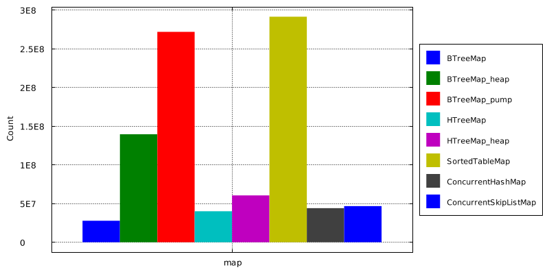
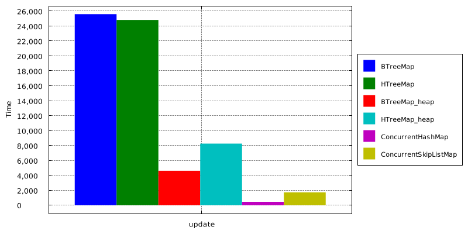
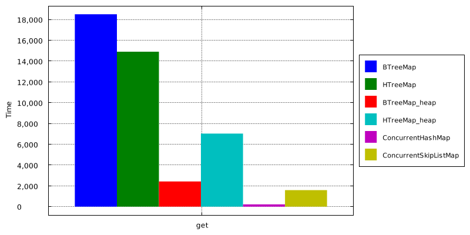

In-memory benchmarks¶
This benchmark compares different Map implementations. We try to keep this test fair, no trick or extra tuning. Also dataset is small with no GC overhead.
Benchmark source is in Github repo. Please send Pull Request if you have improvements. All tests ran on Linux with 64bit JDK8.
Maps¶
There are six maps in this test. All tests work on Map with 10 million entries to minimize GC overhead, Key is 8-byte long, value is 16-byte UUID. Small objects were chosen to better illustrate overhead of internal Map structures (nodes, hash table..)
HTreeMap is concurrent HashMap implementation from MapDB. It is optimized for bigger keys and large number of entries. It has some extra features such as entry expiration with TTL or maximal size.
BTreeMap is concurrent TreeMap implementation from MapDB. It is optimized for minimal space usage and for small keys. It has features to redoce memory and space usage.
- MapDB serializes all data into in-memory binary store backed by
byte[]. This storage is not limited by GC - and
DirectByteBufferversion was tested on half-terabyte of memory.
There is also _heap mode where MapDB stores all data on-heap using pointers and object instances.
There is no serialization involved.
This mode is usually faster for smaller sets, but is limited by Garbage Collection.
Memory usage¶
This chart shows how much entries Map<Long,UUID> can fit into 5GB of heap memory.
JVM starts with 5GB maximal heap size (-Xmx5G), entries are added until JVM terminates with OutOfMemoryException.
Number of entries inserted into Map with 5GB heap, before JVM runs out of memory (higher is better)
ConcurrentHashMap and ConcurrentSkipListMap are bundled with Java. Their both consume about the same amount of memory.
BTreeMap should have in theory very good space usage. However underlying store is too fragmented after frequent updates,
this bug should be solved soon. BTreeMap_pump shows best case for BTreeMap, with no fragmentation.
BTreeMap_heap is on-heap version of BTreeMap. It uses specialized node representation
(Long[] and UUID[] are internally stored in long[]) and that makes it space efficient.
HTreeMap is not yet optimized for space usage, no surprise here.
SortedTableMap is very space efficient after compaction.
Random updates¶
Time to update 100M random keys on Map with 100M entries (smaller is better)
ConcurrentHashMap in this case rocks .
HTreeMap and BTreeMap are relatively slow. Optimizations are planned for M4.
Random get¶
Time to get 100M random keys on Map with 100M entries (smaller is better)
ConcurrentHashMap rocks again.
BTreeMap_heap takes advantage of specialization (it uses long[] instead of Long[] in BTree Nodes).
HTreeMap and BTreeMap are relatively slow. Optimizations are planned for M4.